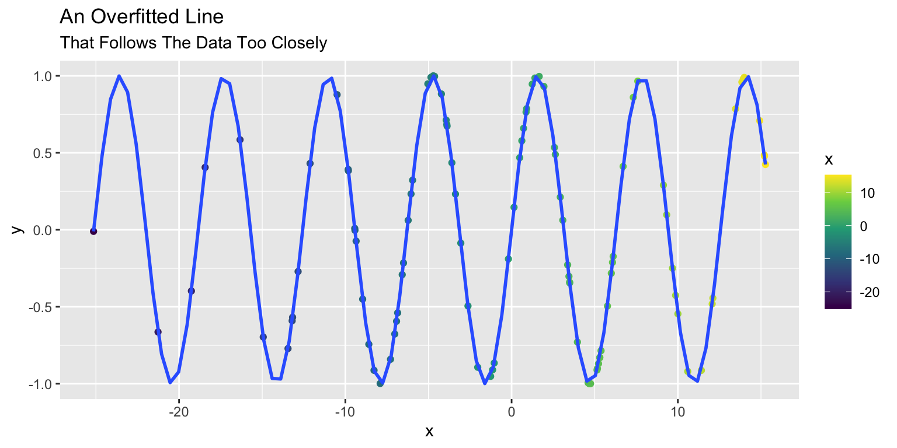
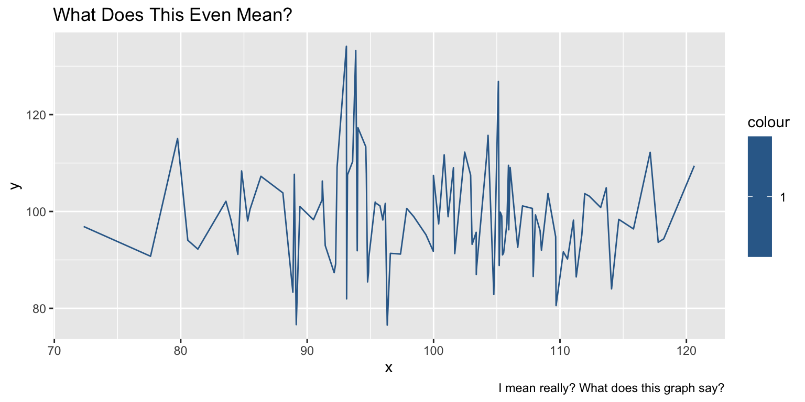

Goodnight R
(with thanks to @olgarithmic)
Andy Grogan-Kaylor
Goodnight R
- In the great green room
- There was someone coding alone
- And a red balloon 🎈
- And a picture of the cow 🐮jumping over the moon 🌔.
- And there were three little bears 🐻 🐻 🐻 sitting on chairs
- And two little kittens 🐱 🐱 and a pair of mittens 🧤.
- And a little toy house 🏠 and a young mouse 🐭.
- And a comb and a brush
- And a bowl full of mush 🥣
- And the person who was coding was whispering, “Hush.” 🤫
Goodnight columns, goodnight rows,
## x y
## 1 8 4
## 2 5 2
## 3 7 6
## 4 1 6
## 5 2 18, 5, 7, 1 and 2
🐰
Goodnight kind strangers on Stack Overflow,
😃 😃 😃
Stack Overflow Logo
Goodnight factors, goodnight strings,
x <-c("two little kittens",
"And a pair of mittens",
"And a little toy house",
"And a young mouse",
"And a comb and a brush and a bowl full of mush")
as.factor(x)## [1] two little kittens
## [2] And a pair of mittens
## [3] And a little toy house
## [4] And a young mouse
## [5] And a comb and a brush and a bowl full of mush
## 5 Levels: And a comb and a brush and a bowl full of mush ...Goodnight overfitted things,

Goodnight anxiety and frustrated thoughts,
Goodnight inconclusive plots.
